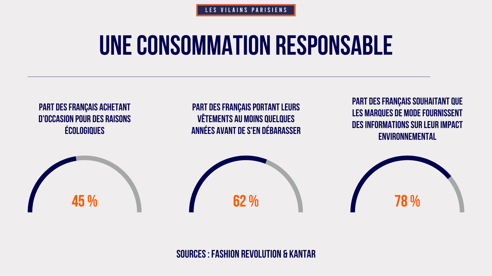
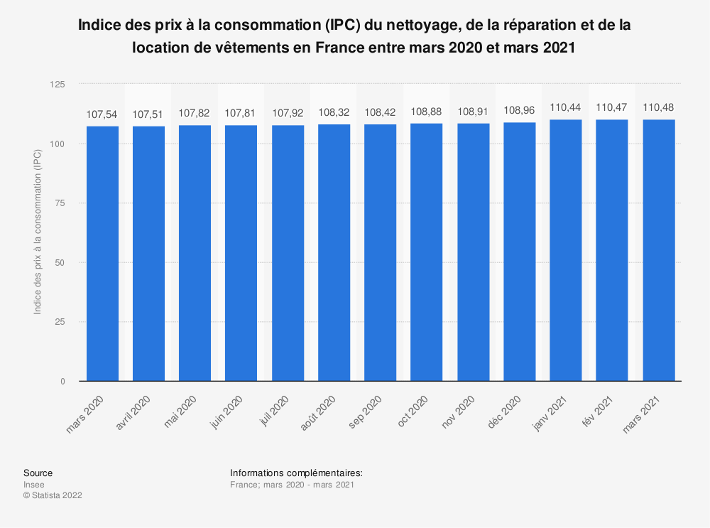

Présentation
Clothing Loc a été créée en 2021 par 4 associés passionnés : Nicolas, Benjamin, Liam et Martin. L'entreprise est spécialisée dans la location de vêtements, afin de lutter contre la surconsommation liée à la vente excessive de produits. En tant qu'entreprise engagée pour l'environnement, Clothing Loc s'efforce de réutiliser ses produits de manière responsable. De plus, l'entreprise est solidaire et met en place des initiatives pour recycler ou donner les vêtements trop abîmés à des personnes en situation précaire. En choisissant Clothing Loc pour vos besoins en matière de vêtements, vous faites un choix éco-responsable et solidaire. Nous espérons avoir le plaisir de vous accueillir bientôt parmi nos clients.
Chez Clothing Loc, nous croyons fermement que la mode peut être durable et responsable. Nous proposons une large gamme de vêtements de qualité pour toutes les occasions, du casual au formel. Nous avons une sélection de marques éthiques et durables, ainsi que des pièces vintage uniques. Nous sommes également fiers de proposer la location de vêtements pour ceux qui cherchent à réduire leur empreinte carbone tout en ayant accès à une variété de styles. En tant qu'entreprise axée sur l'environnement, nous prenons soin de nos produits et les entretenons de manière responsable pour prolonger leur durée de vie. Nous travaillons également en collaboration avec des organisations locales pour recycler ou donner les vêtements qui ne sont plus utilisables, afin de les donner à ceux qui en ont le plus besoin. Nous sommes convaincus que chacun peut contribuer à la lutte contre la surconsommation et à la protection de notre planète, et nous sommes heureux de vous offrir une alternative responsable pour vos besoins en matière de vêtements. Nous espérons avoir le plaisir de vous accueillir bientôt dans notre boutique ou sur notre site en ligne.
Services
- Faites votre choix parmi notre large gamme de vêtements de qualité, allant du casual au formel.
- Nous vous enverrons votre commande dans un délai de 24 heures.
- Portez et profitez de vos vêtements pendant la durée de votre location.
- Lorsque votre location est terminée, envoyez-nous simplement les vêtements en retour dans leur emballage d'origine.
- Faites votre choix parmi notre large gamme de vêtements de qualité, allant du casual au formel. Nous proposons une sélection de marques éthiques et durables, ainsi que des pièces vintage uniques.
- Ajoutez les articles de votre choix à votre panier et procédez au paiement en toute sécurité via notre site en ligne.
- Nous vous enverrons votre commande dans un délai de 24 heures.
- Portez et profitez de vos vêtements pendant de nombreuses années à venir.
Location de vetement :
Chez Clothing Loc, nous proposons une option de location de vêtements afin de répondre aux besoins de ceux qui cherchent à réduire leur empreinte carbone et à lutter contre la surconsommation. Voici comment notre système de location fonctionne :
Nous nous occupons du nettoyage et de l'entretien de nos vêtements afin de prolonger leur durée de vie et de les rendre disponibles à nouveau pour d'autres clients. En choisissant notre option de location, vous avez accès à une variété de styles tout en faisant un choix éco-responsable et solidaire. Nous espérons que vous apprécierez cette option lors de votre prochaine visite chez Clothing Loc. 
vente
Chez Clothing Loc, nous proposons une option de vente d'habits pour ceux qui cherchent à acheter des vêtements de qualité et durables. Voici comment notre système de vente fonctionne :
Équipe
- Blondeau Nicolas
- Bachelard Benjamin
- Monchanin Liam
- Bonetti Martin
Contact
Informations de contact de l'entreprise